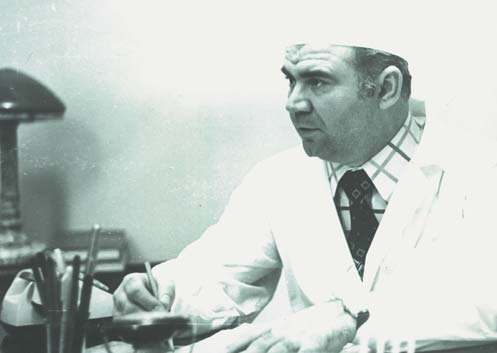
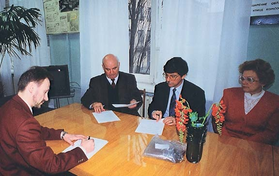
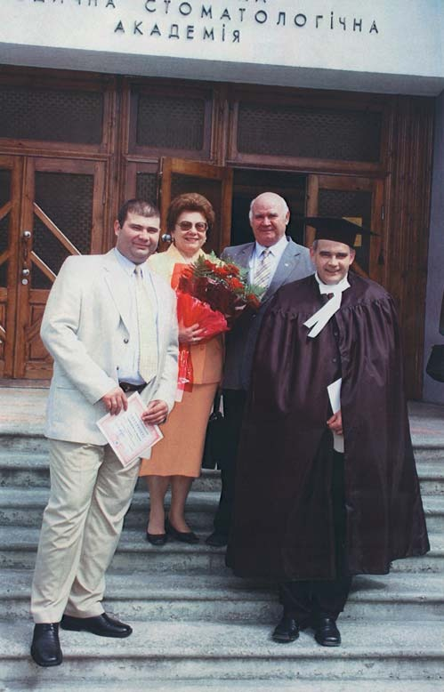

Пам'ять · журнал «ДентАрт» 2016 №2
Він бачив горизонт, він визначав мету і досягав її. Пам'яті Миколи Сергійовича Скрипникова
HE SAW THE HORIZON, HE SET THE GOAL AND ACHIEVED IT. IN MEMORY OF MYKOLA SKRYPNIKOV
19 травня 2016 року професорові Скрипнікову виповнилося б 80 років. І слова визнання й подяки багато його співробітників і учнів могли б сказати йому особисто. Але ось уже шість років його немає з нами. І навіть з такої невеликої часової дистанції виразніше, яскравіше вимальовується роль Миколи Сергійовича в розвитку Української медичної стоматологічної академії, де він був ректором у 1986-2003 роках, у підготовці викладацьких кадрів, підтримці перспективних напрямків стоматологічної науки і практики.
Він був людиною свого часу, коли не дуже вітали сміливу ініціативу. «Багато на себе береш», — традиційний докір господарів високих партійних кабінетів надто вже неспокійним керівникам навчальних закладів та підприємств, тим, хто весь час щось «вибивав».
Він брав на себе багато. Він визначав мету і досягав її. Будував навчальні корпуси й гуртожитки. Зміцнював наукову і матеріальну базу академії. І сьогодні його згадують добрим словом ті, хто працював з ним, хто прийшов йому на зміну.
Професор В'ячеслав Ждан, ректор Української медичної стоматологічної академії:
— Микола Сергійович Скрипніков зіграв у моєму житті і як людини, і як лікаря, і як організатора дуже значущу роль. Із самого початку мого навчання в академії я мав можливість спілкуватися з ним як із завідувачем кафедри оперативної хірургії та клінічної анатомії, і я бачив, як формувалися його організаторські здібності. Це був кінець 70-х — початок 80-х років, коли закладали і будували морфологічний корпус. Я бачив, як Микола Сергійович вникав у проблеми будівництва, навіть не будучи на той час ректором. Якби не його зусилля, його енергія, комунікативність і професіоналізм, не було б у нас цього морфологічного корпусу, а потім і лабораторного. Я вважаю, що завдяки зусиллям Миколи Сергійовича ми сьогодні маємо досить широку інфраструктуру академії — корпуси, гуртожитки, склади, гаражі...
Як бачимо, такі риси характеру Миколи Сергійовича, як відповідальність і наполегливість, сьогодні втілилися в гарні перспективи академії. Колектив, що його сформував ректор Скрипніков, успішно працює, ми докладаємо своїх зусиль, свого натхнення для того, щоб не втратити той темп, який задав Микола Сергійович.
Якщо поглянути на адміністрацію академії, то дві третини — вихованці Миколи Сергійовича, яким він віддавав свою душу, серце, знання. Сьогодні всі головні лікарі лікувальних установ Полтави — вихованці нашого вузу. Педколектив академії — на дві третини випускники УМСА. В академії працюють два сини Миколи Сергійовича, його дружина Таїса Петрівна, і це теж факт, який підтверджує, що ми нічого не ламаємо. Ми тільки перспективно вносимо в сучасні умови спадщину наших учителів. Я вважаю, що віддаючи данину пам'яті таким людям, як Микола Сергійович, ми утверджуємо перспективу тієї справи, якій він присвятив життя.

Професор Микола Скрипніков у своєму робочому кабінеті завідувача кафедри. 1985 р.
Академія пам'ятає. Академія йде вперед. УМСА — це бренд, відомий не лише в Україні, а й далеко за її межами, про що, зокрема, свідчить значна кількість іноземних студентів. Ми ввели нову систему контролю знань — електронний журнал, що полегшило і самоконтроль студентів, і батьківський контроль. Батьки з понад 50 держав світу заходять у наш журнал, щоб знати, як іде навчання сина або дочки. Ми маємо можливість посилати на стажування у вищі медичні заклади Європи наших студентів за рахунок Євросоюзу. Було б тільки бажання і знання мови. Гадаю, усе це сподобалося б ректорові Скрипнікову, керівникові, який працював на перспективу.

Сергій Радлінський, Микола Скрипніков, Ян Ватт і Таїса Скрипникова обговорюють концепцію журналу «ДентАрт», 1994 рік.
Професор Ігор Кайдашев, проректор з наукової роботи УМСА:
— Микола Сергійович Скрипніков розумів необхідність глибоких наукових досліджень для розвитку стоматології. Тому в 1989 році у нашому вузі було створено Центральну науково-дослідну лабораторію, на базі якої провадилися основні наукові дослідження наших учених. Я завідував лабораторією у 1996-2009 роках і переконаний, що заслуг Миколи Сергійовича в розвитку цього підрозділу не можна переоцінити. За підтримки ректора ми домоглися того, що непогано обладнали лабораторію, придбали багато на той момент найсучасніших видів обладнання, що й дозволило надалі реорганізувати лабораторію у Науково-дослідний інститут генетичних та імунологічних основ розвитку патології та фармакогенетики. І сьогодні, незважаючи на проблеми з фінансуванням науки у нашій державі, це найпотужніша технологічна база академії. Ми пам'ятаємо все, що зробив для розвитку науки професор Скрипніков, і дбайливо зберігаємо цю пам'ять.
Професор Тетяна Петрушанко, завідувач кафедри терапевтичної стоматології УМСА:
— Вельмишановний Микола Сергійович Скрипніков був і залишається для мене людиною, котра більшістю своїх людських якостей є еталоном для наслідування і рівняння. Його життєлюбність, оптимізм, впевненість у собі, комунікабельність, мудрість, цілеспрямованість, далекоглядність, людинолюбство викликають захоплення. Уміння правильно сформулювати пріоритети, ставити конкретні цілі, планувати шляхи їх досягнення і чітко їх реалізовувати вирізняло стиль керівництва Миколи Сергійовича. Особливо важливо, що головної ваги у своїй роботі керівника він надавав кадровим питанням, звертаючи велику увагу на молодь.
Хочу зазначити, що появою моєї докторської дисертації я багато в чому зобов'язана Миколі Сергійовичу. Для мене наукова діяльність завжди була сферою захоплення, отримання відповідей на питання, що цікавлять, але аж ніяк не метою захисту дисертацій і отримання наукових ступенів, посад. Можливо, тому кандидатську дисертацію я виконувала майже 7 років, ретельно і всебічно вивчаючи і вирішуючи поставлені наукові завдання. Планування докторської дисертації взагалі не розглядалося. І ось, успішно захистивши у свій день народження кандидатську дисертацію за двома спеціальностями (стоматологія та патологічна фізіологія), підготувавши і відправивши всі необхідні після захисту документи до Києва у тільки-но створену в Україні Вищу атестаційну комісію (ВАК), я, нарешті, зітхнула з полегшенням. Але розслаблятися не випадало!
Не минуло й двох місяців, як мене терміново викликає ректор Микола Сергійович Скрипніков і ставить конкретне завдання — протягом тижня підготувати пакет документів на планування моєї докторської дисертації. Усі мої аргументи «проти планування» були для Миколи Сергійовича не лише не переконливі, але й швидко відкинуті. Тому я завжди буду вдячна професорові Скрипнікову за довіру, підтримку та активну участь у моєму становленні як ученого.
Професор Таїса Скрипнікова, вдова Миколи Сергійовича:
— Ідуть роки, час плине, як вода, і відносить геть дрібні образи, незгоди в чомусь. І вимальовується образ абсолютно цілісної людини. За що б не брався Микола Сергійович, він умів досягнути мети, причому не відкладаючи, не розтягуючи на роки. Його планування та виконання були абсолютно точними. Своїм учням він прагнув прищепити такий самий стиль роботи. Їхні дослідження були конкретними і виконувалися у короткі строки.
Крім того, що він був такою організованою людиною, він був і людиною творчою. Умів придумати, побачити, схопити щось важливе. Він добре бачив горизонт. Микола Сергійович першим в Україні запропонував: давайте введемо контрактну форму навчання. Однак у міністерстві відповіли: «А де ми тоді візьмемо Ломоносових, якщо будемо вчити за гроші?» Але через три-чотири роки контрактна форма навчання почала розвиватися.
Чоловік розбирався в будівництві і багато побудував. У нього був дуже цікавий розпорядок дня у вихідні. У нас це називалося «підемо гуляти». Він одягав спортивний костюм, куртку, і ми йшли на вулицю Кагамлика, на Навроцького, дивилися гуртожитки, поверталися додому, він просив записати недоліки, які ми там побачили, — і в понеділок на ректораті госпчастина вже знала, що їй робити. У травні він уже готувався до зими.
Що ж до якихось особистих вигод, то для себе він не встиг надбати нічого. Коли був уже тяжко хворий, то навіть просив у мене вибачення з цього приводу. Але головне він встиг — виховав гідних синів. І виростив плеяду учнів. У нього були нагороди, звання, але найбільшою нагородою була подарована студентами футболка з написом Альма Патер. Ці два слова і можна назвати найвищим званням.
Сергій Радлінський, доцент Української медичної стоматологічної академії, головний лікар клініки-студії «Аполлонія», в.о. головного редактора журналу «ДентАрт»:
— Оглядаючись у минуле й аналізуючи те, як Микола Сергійович Скрипніков підтримував нас, молодих, я дивуюся і захоплююся тим, як він наважився на ті кроки, які робив не лише в межах своїх повноважень, але іноді й виходячи за них. Сімдесяті роки, у пріоритетах — продовольча програма, контрпропаганда, а ми, молоді-необстріляні, все якимись композитами маримо, це ж імпортні матеріали! Засновуючи «Комподент», ми ще й самі не зовсім розуміли, що з цього може вийти. А він умів побачити паростки нового, зазирнути вперед, оцінити перспективи і прокладати той шлях, по якому можна було йти. Він не боявся брати на себе відповідальність за починання молодих колег. Дуже багато молодих викладачів у роки його ректорства стали завідувачами кафедр, написали ґрунтовні наукові праці. Його кафедра була справжньою кузнею дисертацій. Це ж не жарт — Микола Сергійович був науковим керівником 76 кандидатських і докторських робіт! Він умів спонукати людину на це, не давав розслаблятися, впадати у творчий застій.

Чотири професори — одна стоматологічна династія.
Ось таким він мені і запам'ятався назавжди — людиною, яка бачила наперед і могла допомогти тим, хто був поруч, прийти до мети своїм власним шляхом. Він підтримав не лише наші клінічні новації, не тільки «Призма-чемпіонат», а й ідею створення журналу «ДентАрт», був його незмінним головним редактором і дуже цінував місію друкованим словом доносити все нове стоматологам, яким це буде цікаво.
Мир душі Вашій, Миколо Сергійовичу! Відпочиньте від безлічі справ хоч в інших світах!
Записала Ольга Гринчук